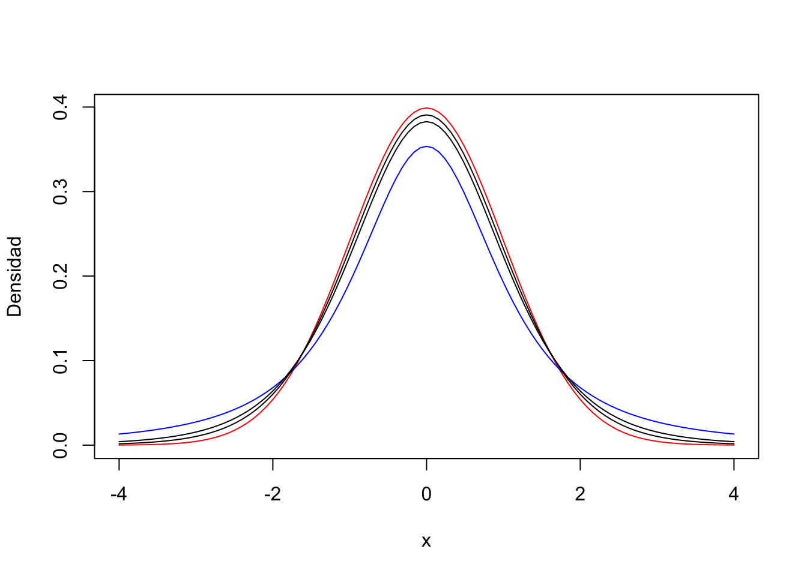
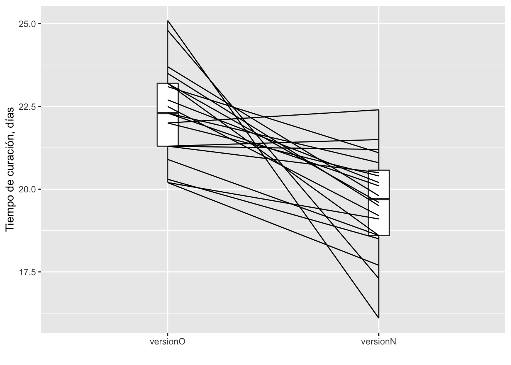

Inferencias con Una Población
2.4.Inferencias acerca de la Media de Una Población
Es usual preguntarnos sobre el valor de la media de una población, a partir de una muestra: ¿cuál es la concentración de nitrógeno en este lago? ¿cuál es el nivel de azúcar en la sangre de la población de Humacao? En esta sección estaremos realizando pruebas de hipótesis acerca de la media y su intervalo de confianza, en una sola muestra.
2.4.1.La distribución t de Student
Objetivos
Conocer la distribución t y sus aplicaciones
En probabilidad y estadística, la distribución t de Student (o simplemente la distribución t) es cualquier miembro de una familia de distribuciones de probabilidad continua que surgen al estimar la media de una población con distribución normal, en situaciones en las que el tamaño de la muestra es pequeño y se desconoce la desviación estándar de la población. Fue desarrollado por el estadístico inglés William Sealy Gosset bajo el seudónimo “Student”.
Grados de Libertad
Observaciones necesarias para determinar un parámetro estadístico
La distribución t es similar a la distribución normal, excepto que está determinada por los grados de libertad(gl). Los grados de libertad indican el número de observaciones independientes que pueden usarse para estimar un parámetro estadístico. Un ejemplo es el cálculo de la media: el cálculo de la media incluye la suma de todos los valores de una muestra, por lo tanto si conocemos n - 1 valores y la media de los valores valores, podemos conocer el enésimo valor desconocido, por lo tanto en cualquier cálculo de un estadístico que requiera la media de una muestra, debemos rebajar 1 al tamaño de la muestra para obtener los grados de libertad de ese estadístico.
La siguiente gráfica nos muestra la dependencia de la distribución t en el tamaño de la muestra, por lo tanto los valores de t dependen de los grados de libertad (n - 1) y de la probabilidad \(\alpha\).
curve(dnorm(x), -4, 4, col = "red", ylab = "Densidad")
curve(dt(x, df = 2), col = "blue", add = TRUE)
curve(dt(x, df = 6), add = TRUE)
curve(dt(x, df = 12), add = TRUE) Figura 1. Distribución normal estándar (roja) y distribución t para grados de libertad = 2 (azul), 6, 12.
Valores de la Distribución t
Valores de t mediante tabla y las funciones pt y qt
Usualmente la distribución t se utiliza para encontrar valores críticos para un determinado valor de \(\alpha\) (error tipo I), por ejemplo 0.05. En la tabla t Table podemos encontrar valores de t para algunos valores representativos de \(\alpha\). En esta tabla podemos determinar el valor crítico para una probabilidad a un lado u otro de la curva (una cola), o repartir la probabilidad entre ambos extremos de la curva (dos colas).
Ejemplo
Encontrar en la tabla el valor de t para un \(\alpha\) de 0.10 de dos colas, y para un \(\alpha\) de 0.05 en la cola izquierda, para una muestra de 10 observaciones.
Ahora utilizaremos las funciones que provee R:
# valor de t alfa = 0.05 izquierda
qt(0.05, 9, lower.tail = TRUE)## [1] -1.833113# valor de t alfa = 0.05 derecha
qt(0.05, 9, lower.tail = FALSE)## [1] 1.833113# probabilidad con valor de t
pt(1.83311, 9,lower.tail = FALSE)## [1] 0.05000023En las próximas secciones utilizaremos la distribución t para calcular intervalos de confianza y pruebas de hipótesis sobre la media de una población.
2.4.2.Intervalo de Confianza para la Media
Objetivos
Calcular intervalos de confianza para la media
Con una muestra, obtenida de una población que asumimos tiene una distribución normal de valores de alguna variable, podemos calcular el intervalo de confianza, dentro del cual tenemos cierto nivel de confianza (dado por la probabilidad establecida) de que se encuentra la media poblacional (\(\mu\)).
A partir de una muestra obtenemos la media muestral (\(\bar x\)) y la desviación estándar de la muestra (\(s\)), y el error estándar de la media muestral (\(s_{\bar x} = s / \sqrt n\)). Ahora podemos calcular el intervalo de confianza mediante las siguientes fórmulas:
\[LS_{Pr} = \bar x + (t_{\alpha,n-1}*s_{\bar x})\]
\[LI_{Pr} = \bar x - (t_{\alpha,n-1}*s_{\bar x})\]
Donde:
\(LS\): límite superior del intervalo de confianza
\(LI\): límite inferior del intervalo de confianza
\(Pr\): probabilidad dentro del intervalo de confianza
\(\bar x\): media de la muestra
\(t\): valor del estadístico t
\(\alpha\): probabilidad fuera del intervalo (1 - Pr)
\(n - 1\): grados de libertad (n, tamaño de la muestra)
\(s_{\bar x}\): error estándar de la media muestral
Ejercicio
Se colectó una muestra de 20 individuos de Gambusia affinis (mosquito fish), y se les midió la longitud a cada uno. La longitud media de la muestra (\(\bar x\)) fue 21.0 mm, y la desviación estándar de la muestra (s) fue 1.76 mm. Queremos encontrar el intervalo de 95% de confianza para la media poblacional. Asumimos que la longitud de los peces es una variable con distribución normal y que la muestra fue tomada al azar.
A continuación el cálculo de los intervalos de confianza utilizando R; para el cálculo de la t se usa una probabilidad de error \(\alpha / 2\) debido a que por definición el intervalo de confianza es a ambos lados de la curva de distribución y es simétrico con respecto a la media.
# media de la muestra
media <- 21
# desviación estándar de la muestra
de <- 1.76
# tamaño de la muestra
n <- 20
# cálculo del error para el intervalo con alfa/2
# grados de libertad = n - 1
# error estándar = de/raíz cuadrada de n
error <- qt(0.025,df = n-1, lower.tail = FALSE)*de / sqrt(n)
# límite inferior (izquierdo) del intervalo
left <- media - error
# límite superior (derecho) del intervalo
right <- media + error
sprintf("Límite Inferior = %.2f", left)## [1] "Límite Inferior = 20.18"sprintf("Límite Superior = %.2f", right)## [1] "Límite Superior = 21.82"La media de la población de encuentra dentro del intervalo 20.18 - 21.82, con una confianza de 95 %.
2.4.3.Hipótesis para la Media de una Muestra
Objetivos
Realizar pruebas de hipótesis sobre una sola media
En general, una prueba t para una muestra se utiliza para probar la hipótesis nula:
\[H_0 : \mu = \mu_0\] donde \(\mu_0\) es algún número específico, pre-establecido, y una hipótesis alterna puede ser:
\[H_a : \mu \neq \mu_0\] Para probar la \(H_0\) se utiliza el estadístico t, calculado (\(t_s\)) de la siguiente manera:
\[t_s = \frac{\bar x - \mu_0}{\frac{s}{\sqrt n}}\] Utilizando la tabla o funciones de R, calculamos el valor crítico de t (\(t_{\alpha,n-1}\)) para un valor establecido de \(\alpha\), usualmente 0.05. Si el valor \(t_s\) excede al valor crítico, podemos rechazar \(H_0\), para una probabilidad (error tipo I) igual o menor de \(\alpha\). Por el contrario, un valor de \(t_s\) menor que el valor crítico, no nos permite rechazar la \(H_0\) para nuestro nivel de \(\alpha\).
Pruebas de una o dos colas
Depende de nuestras hipótesis
Les indiqué anteriormente que al usar la tabla de la distribución t, debemos escoger una cola o dos colas para ubicar el valor crítico. La selección de una o dos colas, y en el caso de una cola, la parte de la curva, depende de las hipótesis establecidas. Si las hipótesis no indican una tendencia (mayor o menor) en particular para el valor de la media, como se formularon anteriormente, entonces debemos utilizar una prueba de dos colas, y el valor de \(\alpha\) se reparte entre los dos extremos como \(\alpha / 2\). Si por el contrario las hipótesis tienen esta forma:
\[H_0 : \mu \geq \mu_0\quad ó\quad H_0 : \mu \leq \mu_0\] \[H_a : \mu < \mu_0\quad ó\quad H_a : \mu > \mu_0\] entonces debemos usar una prueba de una cola.
Ejemplo

tomado de Havel et al., 2019
Figura 2. Ejemplo para ilustrar la selección de prueba de una o dos colas.
Ejercicio
Las reglas de la FDA exigen que los medicamentos cumplan con estrictos estándares de contenido de las sustancias activas de los mismos. Para un suplemento vitamínico está establecido que el contenido de vitamina X sea de un promedio de 100 unidades por píldora. Una bioquímica de la farmaceútica que las produce, toma una muestra de 50 píldoras de un lote de miles de píldoras. En su análisis encontró que la muestra tiene un contenido promedio de 100.5 unidades de vitamina X por píldora, con una desviación estándar de 2.19 unidades. Desea comprobar si la muestra se tomo de una población (el lote completo) con una media de 100 unidades.
Mediante R podemos calcular el valor del estadístico t y compararlo con el de la distribución t correspondiente para realizar la prueba de hipótesis \(H_0:\mu=100\):
# cálculo de t
tcalc <- (100.5 - 100) / (2.19 / sqrt(50))
# t de la distribución para alfa = 0.05 (dos colas) y gl = 49
ttab <- qt(0.025, 49, lower.tail = FALSE)
# mostrar valores
sprintf("t calculado para la muestra = %.3f", tcalc)## [1] "t calculado para la muestra = 1.614"sprintf("t para la distribución con 49 g.l. = %.3f", ttab)## [1] "t para la distribución con 49 g.l. = 2.010"Por lo tanto, para nuestras condiciones, no podemos rechazar la hipótesis nula.
2.4.4.Prueba t Pareada
Objetivos
Probar hipótesis en experimentos de comparaciones pareadas
En el diseño de comparaciones pareadas un sujeto experimental se empareja con otro lo más similar posible y, de manera aleatoria, a uno se le da un tratamiento y al otro no o uno diferente. El efecto de un tratamiento se mide mediante la diferencia entre los sujetos emparejados, por eso la prueba de hipótesis se realiza como de una muestra.
Supuestos de la prueba
Normalidad y muestra aleatoria
- Las mediciones son continuas, o si son discretas tienen un ámbito amplio de valores.
- La distribución de la variable de las diferencias entre los pares es normal.
- Los datos son una muestra aleatoria de una población de interés.
Ejemplo
Vamos a analizar datos del tiempo de curación de quemaduras (días) utilizando dos preparaciones de un medicamento. Los sujetos (n = 20) fueron tratados de quemaduras en ambos brazos, un brazo con la versión O y el otro con la versión N del medicamento.| paciente | versión O | versión N | diferencia |
|---|---|---|---|
| 1 | 23.5 | 19.5 | 4.0 |
| 2 | 22.3 | 20.1 | 2.2 |
| 3 | 20.2 | 19.1 | 1.1 |
| 4 | 22.5 | 19.2 | 3.3 |
| 5 | 21.3 | 21.2 | 0.1 |
| 6 | 23.2 | 19.6 | 3.6 |
| 7 | 23.7 | 19.8 | 3.9 |
| 8 | 22.7 | 20.2 | 2.5 |
| 9 | 20.2 | 17.7 | 2.5 |
| 10 | 20.9 | 18.6 | 2.3 |
| 11 | 22.3 | 20.8 | 1.5 |
| 12 | 23.1 | 21.1 | 2.0 |
| 13 | 20.3 | 18.5 | 1.8 |
| 14 | 25.1 | 16.1 | 9.0 |
| 15 | 24.8 | 17.3 | 7.5 |
| 16 | 22.0 | 22.4 | -0.4 |
| 17 | 21.3 | 21.5 | -0.2 |
| 18 | 23.2 | 18.6 | 4.6 |
| 19 | 21.3 | 20.5 | 0.8 |
| 20 | 22.0 | 20.4 | 1.6 |
En primer lugar debemos formular las hipótesis de trabajo; en este experimento esperamos que la versión N del medicamento sea mejor que la versión O, por lo tanto el tiempo de curación debe ser menor y la diferencia O - N debe ser un número positivo. \[H_0 : \mu_{diferencia} \leq 0\]
\[H_A : \mu_{diferencia} > 0\]
A partir de los datos anteriores podemos calcular la media de las diferencias y su desviación estándar:
## [1] "Media de las diferencias (días) = 2.685"## [1] "Desviación estándar de las diferencias (días) = 2.362"Ahora calcularemos el valor del estadístico t para nuestra muestra:
\[t = \frac{2.685 - 0}{\frac{2.362}{\sqrt{20}}} = 5.08\]
Utilizando la tabla de la t de Student calculamos el valor crítico (umbral) de t para un \(\alpha\) = 0.05, y n - 1 = 19 grados de libertad. De acuerdo a nuestras hipótesis, la prueba debe ser de una cola. También podemos utilizar la función correspondiente en R.
tumbral <- qt(0.05, 19, lower.tail = FALSE)
tcrit <- sprintf("%.2f", tumbral)\(t_{0.05,19} =\) 1.73
El estadístico t calculado es mayor que el valor crítico de t, por lo tanto rechazamos la \(H_0\) con una probabilidad menor de 0.05 de equivocarnos (error tipo I). La versión N del medicamento cura más rápidamente las quemaduras.
Utilizando R podemos realizar un análisis gráfico del experimento.
library(PairedData)
versionO <- curacion$`versión O`
versionN <- curacion$`versión N`
pd <- paired(versionO,versionN)
plot(pd, type = "profile") + ylab("Tiempo de curación, días")
Figura 3. Tiempo de curación (días) para dos versiones de un medicamento. Box-plot de los valores de cada versión y líneas de conexión de los sujetos pareados.
La prueba t pareada también se puede hacer a partir de los datos originales:
res <- t.test(versionO, versionN, paired = TRUE, alternative = "greater")
res##
## Paired t-test
##
## data: versionO and versionN
## t = 5.0831, df = 19, p-value = 3.303e-05
## alternative hypothesis: true difference in means is greater than 0
## 95 percent confidence interval:
## 1.771641 Inf
## sample estimates:
## mean of the differences
## 2.685
2.4.5.Supuestos y Pruebas No-paramétricas
Objetivos
Conocer las alternativas cuando no se cumplen los supuestos para usar una prueba t
Los supuestos principales para las pruebas paramétricas (basadas en la distribución normal y sus parámetros, \(\mu\) y \(\sigma\)) de una muestra, son la aleatoriedad de la muestra y la normalidad en los datos. Si no se cumple la primera, no hay alternativa, pero en el caso de fallar la normalidad, podemos usar pruebas no-paramétricas.
Prueba de Wilcoxon (Wilcoxon Signed Rank Test)
Alternativa a la prueba t pareada
Cuando los datos no cumplen con el supuesto de normalidad, o las muestras no son suficientemente grandes para obviar ese supuesto, podemos recurrir a pruebas no-paramétricas como sustituto a la prueba t pareada. La prueba de Wilcoxon es un ellas, y consiste en colocar en orden (usualmente de menor a mayor) los resultados (valores absolutos) de las diferencias entre los valores pareados. Luego se suman los valores de rango de las diferencias positivas y de las diferencias negativas, y se aplica la fórmula:
\[W = \sum_{i=1}^{N_r}[sgn(x_{2,i} - x_{1,i})*R_i]\] dónde:
\(W\): estadístico de Wilcoxon
\(N_r\): tamaño de la muestra, excluyendo parejas con valores iguales
\(sgn\): función signo (extrae el signo de la diferencia)
\(x_{2,i} - x_{1,i}\): diferencia entre parejas de valores
\(R_i\): rango (orden) de las diferencias
El valor calculado se compara con un valor crítico de W para una probabilidad establecida.
Los cálculos para usar la fórmula y realizar la prueba correspondiente son algo engorrosos, pero disponemos de procedimientos computacionales, como R, para realizarlos.
Ejemplo
Se piensa que las gatas se vuelven más agresivas al tener gatitos. En un experimento se evaluó la agresividad de 7 gatas antes y después de que parieran. La agresividad se midió mediante una escala entre 1 y 10, con 10 representando la mayor agresividad. Estos datos no cumplen con la distribución normal y son pocos para obviar este requerimiento. Queremos probar la hipótesis de si hay un aumento de la agresividad (\(H_a:diferencia\ en\ agresividad > 0\)).
library(kableExtra)
# vector agresividad x1
x1 <- c(3,2,5,6,5,1,8)
# vector agresividad x2
x2 <- c(7,8,4,9,10,9,9)
# vector diferencia x2 - x1
dif <- x2 - x1
# tabla de datos
gatas <- data.frame(x1,x2,dif)
# ver tabla
names(gatas) <- c("Agresividad antes", "Agresividad después", "Diferencia")
gatas %>%
kbl(caption = "Tabla 2. Agresividad antes y después de parir en gatas (n = 7) y la diferencia después - antes") %>%
kable_classic(full_width = F, html_font = "Cambria")| Agresividad antes | Agresividad después | Diferencia |
|---|---|---|
| 3 | 7 | 4 |
| 2 | 8 | 6 |
| 5 | 4 | -1 |
| 6 | 9 | 3 |
| 5 | 10 | 5 |
| 1 | 9 | 8 |
| 8 | 9 | 1 |
Realizaremos la prueba para una \(H_0 : diferencia \leq 0\) mediante R:
# prueba Wilcoxon (estado final x2, estado inicial x1)
res <- wilcox.test(x2, x1, paired = TRUE, alternative = "greater")
res##
## Wilcoxon signed rank test with continuity correction
##
## data: x2 and x1
## V = 26.5, p-value = 0.02108
## alternative hypothesis: true location shift is greater than 0Podemos concluir de la prueba que podemos rechazar la \(H_0\) con un error tipo I de 0.021, y que las gatas son más agresivas después de parir.